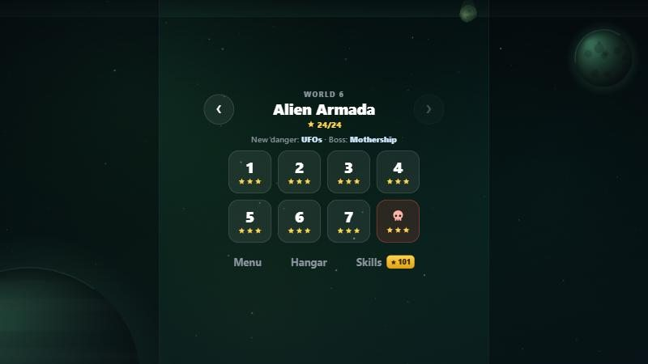
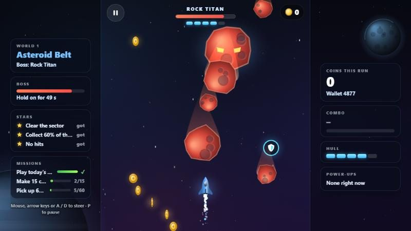
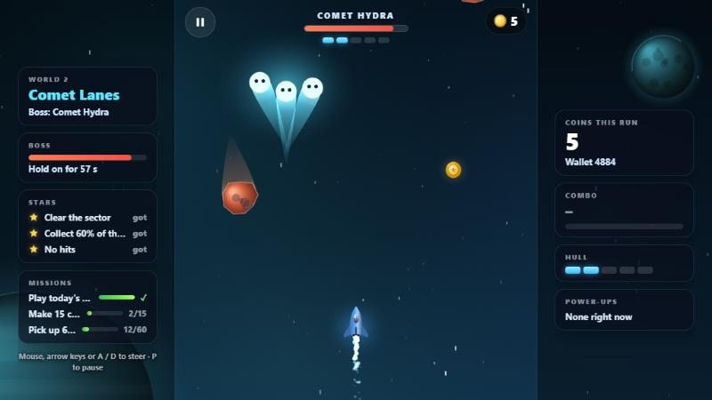
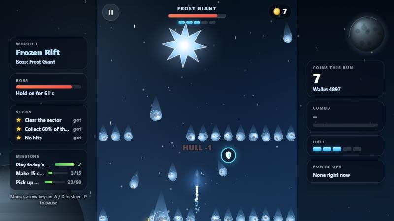
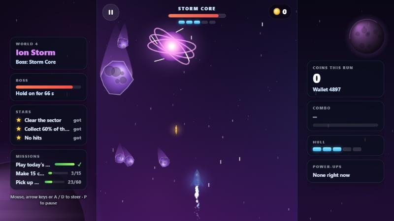
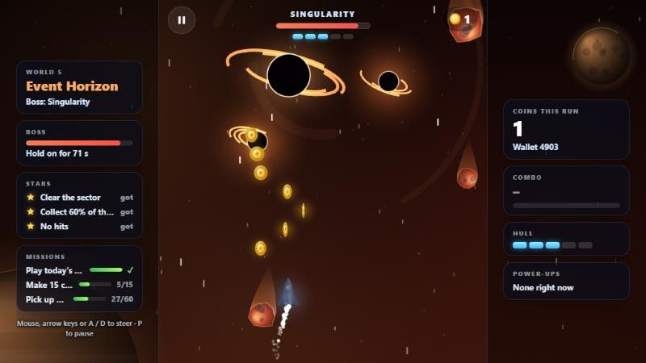

Home › Worlds and bosses
Worlds and bosses guide
The Meteor Swerve campaign crosses six worlds. Each one introduces a new danger, mixes it with everything you have already faced and ends with a boss. Here is what to expect in each world and how to get through it.
How the worlds work
Each world has eight sectors: seven normal ones and a boss fight. You clear a sector by surviving until its timer runs out, and the next sector opens. Sectors get a little longer as you go, from about half a minute at the start of the game to just over a minute near the end.
A world's new danger doesn't arrive all at once. In its first sector it appears now and then; by the seventh it is a constant part of the storm. Dangers from earlier worlds stay in the mix at a steady level, so the last world asks you to handle all six at once.
To enter a new world you need to beat the boss of the world before it and have collected enough stars in total. The star gates are there so that you come back for stars you missed, which also earns you the skill points you need to get stronger.

| World | New danger | Boss | Boss fight | Stars needed |
|---|---|---|---|---|
| 1. Asteroid Belt | Rocks | Rock Titan | 60 s | 0 |
| 2. Comet Lanes | Comets | Comet Hydra | 65 s | 10 |
| 3. Frozen Rift | Splitting ice | Frost Giant | 70 s | 24 |
| 4. Ion Storm | Laser beams | Storm Core | 75 s | 40 |
| 5. Event Horizon | Black holes | Singularity | 80 s | 58 |
| 6. Alien Armada | UFOs | Mothership | 85 s | 78 |
Boss fights work differently from normal sectors. The boss's health bar drains as time passes, so you beat a boss by staying alive until the bar is empty. Every boss has a set of attacks that it uses in turn, with a short pause after each one. Later bosses pause for less time. Learning the order of the attacks is the single biggest help.
World 1: Asteroid Belt
- Sectors: 33 to 57 seconds
- Boss: Rock Titan
- Opens at the start

The first world is all about plain rocks, and it is where you learn the rhythm of the game. The rocks are not all alike, though. Most are medium-sized and fall straight down, but as the sectors go on you will also meet big slow boulders, small fast pebbles and rocks that drift sideways as they fall. About one rock in five is aimed at the spot where your ship is, so sitting still in one place never works for long.
Surviving the sectors
- Stay roughly in the middle of the screen when you can. That gives you the most room to move either way.
- Move early and in small steps. A gap that opens a little to your left is easier to reach than one across the screen.
- Watch for the drifting rocks. A rock that is moving sideways will be somewhere else by the time it reaches you.
- This is the best world to practise close calls, because the rocks are predictable.
Boss: Rock Titan
The Rock Titan sways from side to side at the top of the screen and repeats three attacks:
- Volley: two fans of rocks thrown from the boss, with the middle of each fan aimed at your ship. Move as soon as a fan is thrown and settle into a gap between its rocks. The gaps widen as the rocks fall, so by the time they reach your ship there is room to slip between them.
- Rain: a shower of ten meteors falling from random places over about two and a half seconds.
- Boulders: two huge rocks thrown straight at where your ship is. They are aimed when they are thrown, so one clear step to the side right after the throw is enough.
World 2: Comet Lanes
- Sectors: 36 to 60 seconds
- Boss: Comet Hydra
- Needs 10 stars

Comets are small and very fast, and they come in at a slight angle. You can't react to a comet once it is on the screen, so the game warns you: a red marker flashes at the top edge about half a second before a comet enters, right where it will come in.
Surviving the sectors
- Train your eyes to glance at the top edge. When a marker appears above you, move away from it at once.
- Comets travel at an angle, so step to the side the comet is moving away from.
- The Early Warning skill in the star tree makes the markers appear sooner, which helps a lot here.
Boss: Comet Hydra
- Comet sweep: seven comets one after another across the screen, from one side to the other. Don't try to outrun it. Instead, slip into the lanes the sweep has already passed.
- Comet fan: two fans of comets aimed at you, one right after the other. Find the gap in the first fan and be ready to shift again for the second, which is aimed at wherever you moved to.
- Rain: the same ten-meteor shower as the Rock Titan's.
World 3: Frozen Rift
- Sectors: 39 to 63 seconds
- Boss: Frost Giant
- Needs 24 stars

The Frozen Rift brings splitting ice: big blocks of ice that fall slowly and then crack into three shards somewhere in the top half of the screen. One shard keeps falling straight down and the other two fly off diagonally to the left and right.
Surviving the sectors
- Never wait directly under a block of ice. That is exactly where the middle shard will land.
- The safest spots are between the shards' paths. The side shards spread out as they fall, so there is room between them by the time they reach your ship.
- A Blast destroys ice blocks before they split, which can save you in a crowded moment.
Boss: Frost Giant
- Splitters: three blocks of ice dropped across the screen, one after another. Expect nine shards in total.
- Ice wall: a full row of shards with just one gap, sent twice. Find the gap as soon as the wall appears at the top and move into it early. It is a few ship-widths wide, plenty if you are there in time.
- Shard fan: two wide fans of shards aimed at you. As with the Rock Titan's volley, the gaps have widened by the time the shards reach you, so move early and pick one.
World 4: Ion Storm
- Sectors: 42 to 66 seconds
- Boss: Storm Core
- Needs 40 stars

In the Ion Storm, laser beams strike down through whole lanes of the screen. A lane glows for a little over a second as a warning, and you hear a charging sound. Then the beam fires for half a second and hits anything in that lane, however high or low.
Surviving the sectors
- When a lane lights up around your ship, get out sideways straight away. Lasers can't be dodged by waiting.
- Keep an eye on where the glowing lanes are when you pick a gap between rocks, so you don't swerve into one.
- Early Warning makes laser warnings longer, just as it does for comets.
Boss: Storm Core
- Laser sweep: five lasers fire one after another, marching across the screen from one side to the other. As with the comet sweep, move into the lanes that have already fired.
- Laser row: lasers in every lane but one. The dark lane is your only safe spot, so read the screen quickly and get into it before the beams fire.
- Volley: fans of rocks, as from the Rock Titan, but with more rocks in each fan.
World 5: Event Horizon
- Sectors: 45 to 69 seconds
- Boss: Singularity
- Needs 58 stars

Black holes drift slowly down the screen in this world, and when your ship comes within their reach they pull it towards them. Touching a black hole's core counts as a hit, but the real danger is subtler: the pull drags your ship off the line you chose and into the path of other dangers. Black holes also bend the paths of nearby rocks and tug coins towards themselves.
Surviving the sectors
- Steer wide around black holes instead of passing close by them.
- When a black hole is beside you, aim a little away from it to cancel out the pull.
- The Gravity Damper skill cuts the pull of black holes by 40%.
Boss: Singularity
The Singularity is the trickiest boss in the game, because it pulls your ship towards it for the whole fight. As it sways from side to side, you have to keep steering against it.
- Spiral: ten rocks thrown in a stream that turns as it fires, sweeping across the screen. As with the sweeps of earlier bosses, slip in behind it, where the stream has already passed.
- Wells: two black holes, one on each side of the screen. Stay near the middle, where their pulls roughly cancel out, until they have passed.
- Rain: a meteor shower, made harder by the constant pull.
World 6: Alien Armada
- Sectors: 48 to 72 seconds
- Boss: Mothership
- Needs 78 stars

The last world adds UFOs. A UFO flies back and forth near the top of the screen and fires three times, each time a small spread of three shots aimed at where your ship is at that moment. Once it has fired all three, it flies away. Everything from the first five worlds is still falling too.
Surviving the sectors
- Keep moving while a UFO is on screen. Shots aimed at a moving ship land where it used to be.
- Move in one smooth direction rather than back and forth, or you may drift back into a shot.
- A Shield is worth a lot here. If you see one, take it.
Boss: Mothership
The final boss borrows attacks from across the game and has the shortest pauses between them.
- Drones: two UFOs launched one after another, each firing aimed shots.
- Spray: three fans of bullets aimed at you in quick succession. Keep sliding in one direction.
- Laser row: lasers in every lane but one, as from the Storm Core.
- Ice wall: a row of shards with a single gap, as from the Frost Giant.
After the last boss
Beat the Mothership and you escape the storm: the game shows your total stars and coins and thanks you for playing. That's not the end, though. There are 144 stars in all, and the last rewards are tied to them. At 120 stars you unlock the Starlight, the strongest ship, and with all 144 you get the Stardust engine trail. Every star you collect is also a skill point in the star tree. After that, Endless mode, the daily challenge and online races keep going for as long as you like.
Stuck on a world? Go back and replay earlier sectors for the stars you missed. They open the next world, and every star is a skill point. The coins you earn on the way pay for hull upgrades, and an extra hull cell makes a big difference against the bosses. See the ships and skills guide and the tips page.